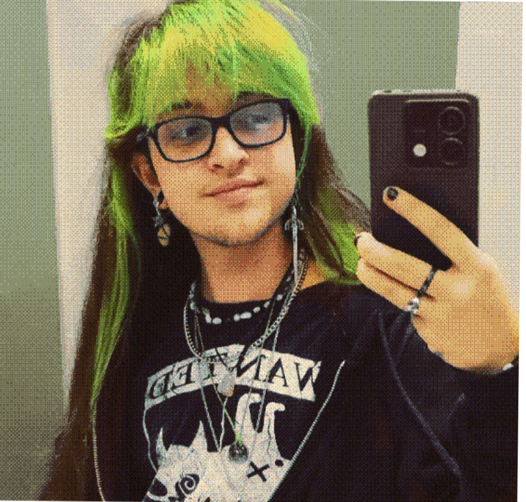

DISEÑO GRÁFICO
PHOTOSHOP
ILLUSTRATOR
AFFINITY
INDESIGN
EDICIÓN DE VIDEO
PREMIERE PRO
AFTER EFFECTS
AUDITION
DA VINCI RESOLVE
IDIOMAS
ESPAÑOL / INGLÉS
SECTORES
ILUSTRACIÓN
DISEÑO EDITORIAL
BRANDING
DISEÑO GRÁFICO
SOFT SKILLS
Trabajo en equipos multidisciplinares
Comunicación efectiva con editores y equipos creativos
Adaptabilidad a diferentes estilos y públicos
Aprendizaje continuo
Pensamiento lateral y resolución de problemas
Hola! Me llamo Ermes (2002, España) y me dedico al arte, la ilustración y el diseño. Mi principal campo de trabajo es la ilustración y el diseño editorial, pero también me apasionan otros campos como el diseño de personajes, el arte textil, el mundo del fanzine y el cómic. En mi obra suelo explorar mundos, personajes e historias de fantasía, inspirados en mi experiencia como persona queer y mezclando un escapismo mágico con preocupaciones sociales reales.
